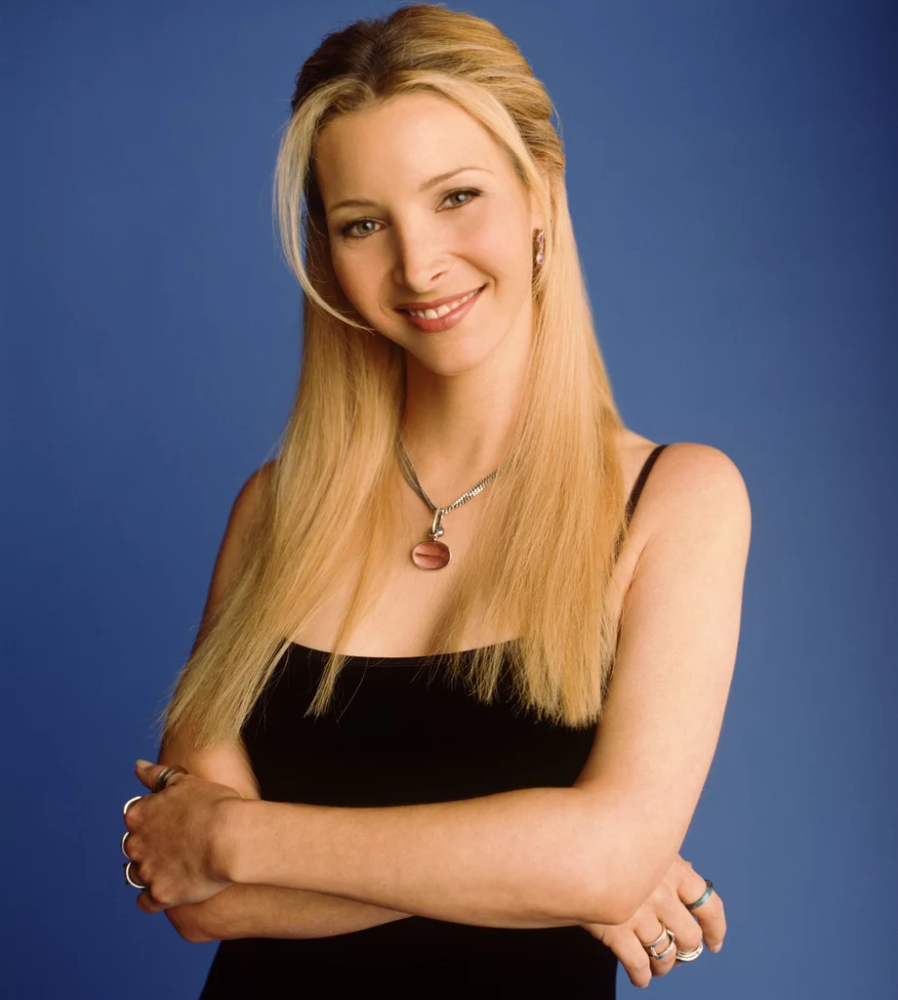

Phoebe
Phoebe Buffay saiu de casa aos 14 anos, e foi moradora de rua antes de conhecer seus amigos. Excêntrica e vegetariana, sua mãe se suicidou, e seu pai abandonou a família. Ela e sua irmã gêmea, Ursula, se odeiam. Conheceu seu meio-irmão, Frank, e aceitou ser "barriga de aluguel" para ele. Trabalha como musicista (criando músicas como "Gato Fedorento/Smelly Cat") e massagista. Na temporada final, ela se casa com Mike Hannigan, interpretado por Paul Rudd.
